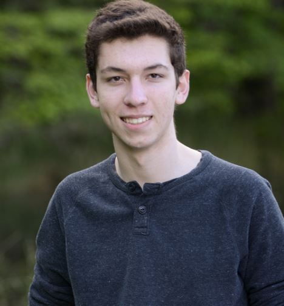

Sean Copenhaver
6119 Treyburn Way, Glen Allen, VA 23059 | 804-615-8892 | smc7@vt.edu | LinkedIn

Education
Virginia Tech | College of Engineering, Blacksburg VA | Graduating May 2021
Bachelor of Science in Computer Science with a Minor in Mathematics.
- GPA: 3.61
- Japanese Culture Association
Deep Run High School | Center for Information Technology, Glen Allen VA | June 2017
Advanced math curriculum. Emphasis in Programming and Computer Science.
- GPA: 4.46 (3.82 unweighted)
- Class Rank: 23/381
Experience
Internship (2 Year) | Continental Automotive Systems Inc, Auburn Hills MI | 2019 - Present
- Researched and built the sensor system for a 1/5th scale autonomous vehicle.
- Programmed vehicle in ROS. Implemented obstacle detection and avoidance.
- Worked during Junior and Senior year at Virginia Tech Transportation Institute facility.
Worked full-time during summers in Auburn Hills MI (2019) and Blacksburg VA (2020).
Design Team | Virginia Tech AutoDrive | 2018 – 2019
- Development of a level 4 autonomous vehicle by 2020 as part of a national competition.
- Member of the Path Planning subteam working with ROS in C++/Python to develop local and global path planning algorithms for an autonomous vehicle.
FIRST Robotics Team | Team 1086 Blue Cheese (Deep Run H.S.) | 2013 – 2017
- Team Captain (2016-2017), Build Team, Pit Crew and Pit Set-Up Crew.
- Team qualified for and participated in 2014-2017 World Championships. Team won 2016 World Championship.
Internship | Hamilton Beach Brands, Glen Allen VA | Summer 2016
- Assembled, disassembled, and ran life tests on small kitchen appliances.
- Developed website enabling engineers to send project requests to prototype developer.